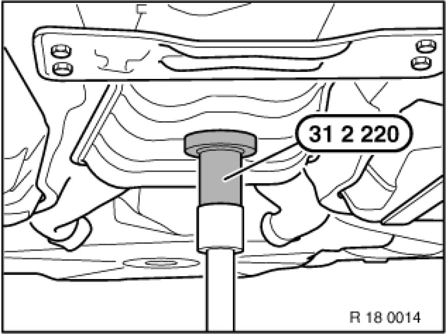
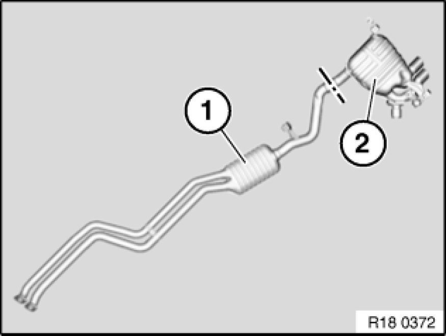
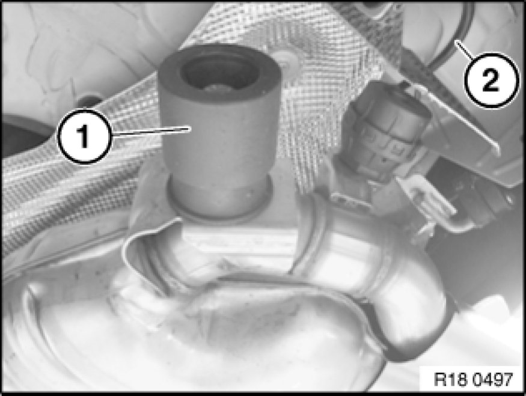
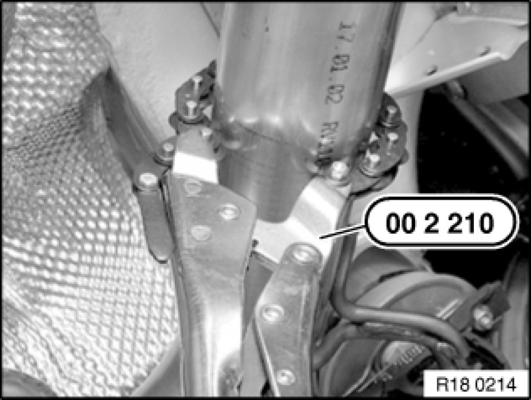
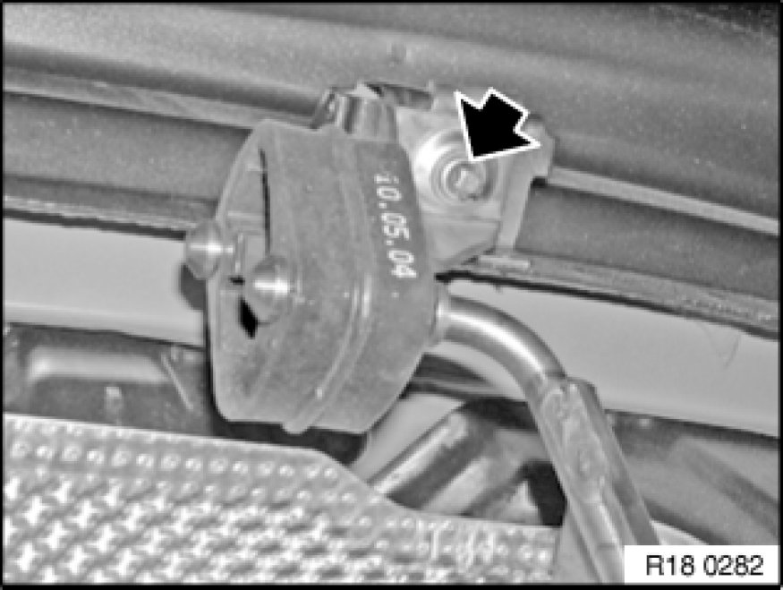
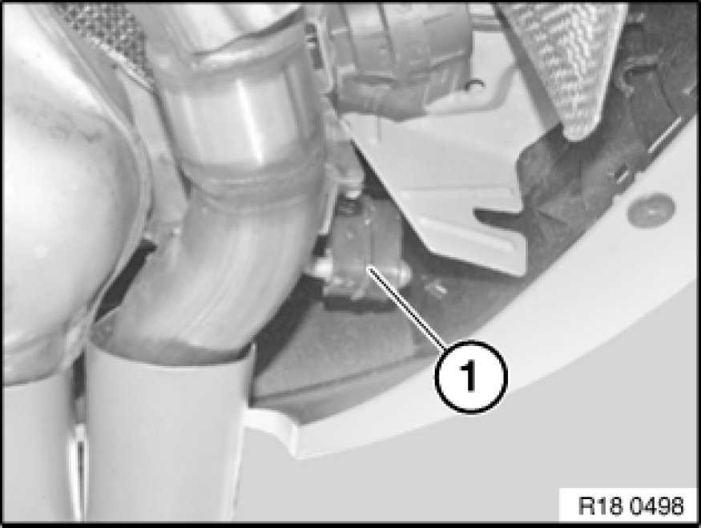
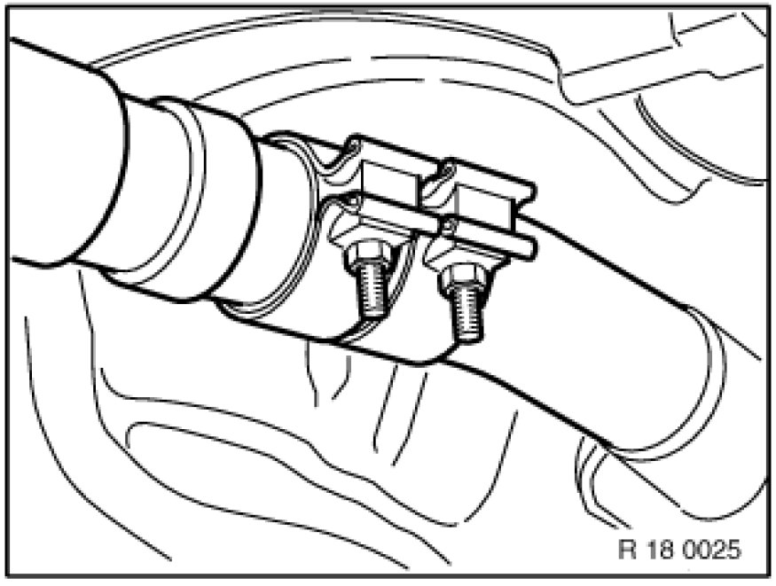

Removing and Installing/Replacing Rear Muffler
18 10 031 - Replacing rear muffler (N52, N52K)

Special tools required:
- 00 2 210
- 31 2 220

Warning!
Scalding hazard!
Only perform these tasks on an engine that has cooled down.

Support rear silencer with special tool 31 2 220.

Note:
If the cutting line is not marked by a punch mark in the pipe, determine the cutting line by means of the pipe length on the new front muffler.
Carry over cutting line to faulty rear muffler and mark.

Pull off vacuum hose (2).

Cut exhaust pipe at marked point with special tool 00 2 210 and deburr.

Release screw on right bracket.
Tightening torque 18 20 5AZ 18 20 Exhaust System Suspension.

Pull rear muffler out of rubber mount (1) and lower.

Installation Note:
Connect front silencer to rear silencer by means of clamp and align.
Centre clamp and tighten down.
Tightening torque 18 20 8AZ 18 20 Exhaust System Suspension.

Note:
Add final details to vehicle.
Check exhaust system for leaks.